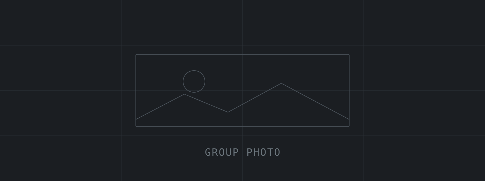
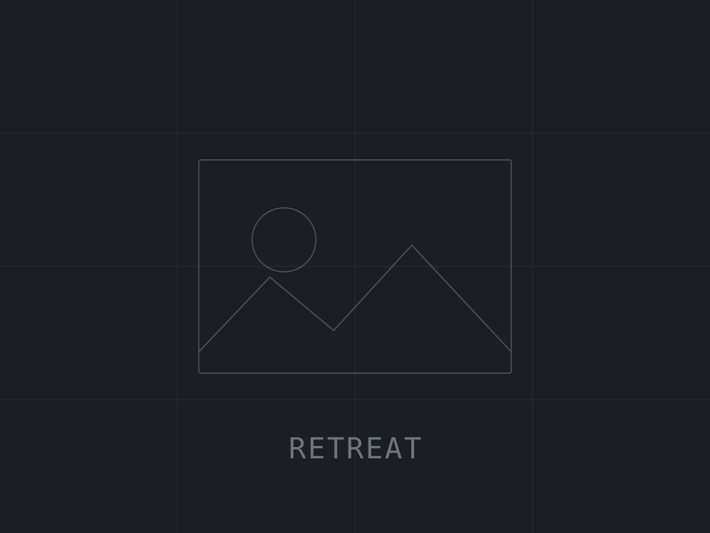
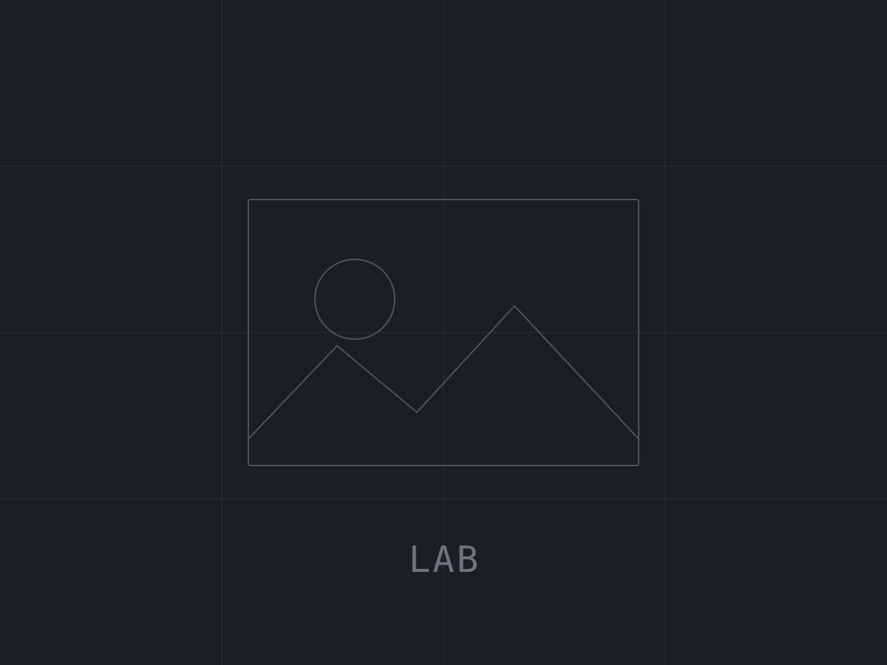
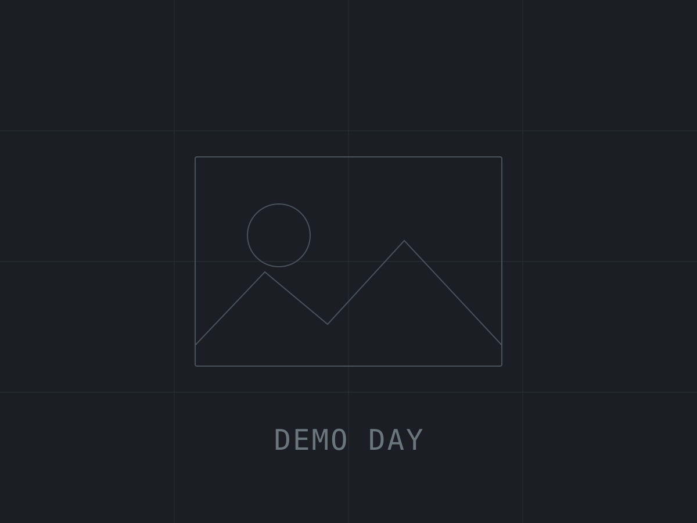

The people in Room 651.
THUNDER spans the Department of Computer Science and Engineering and the Department of Data Science at Seoul National University. Members are listed by the team they work in; several work across more than one.
Principal investigator
Jaejin Lee (이재진)
Directs the THUNDER Research Group across the Department of Computer Science and Engineering and the Department of Data Science.
Computer Science and Engineering
Dohyun Kim (김도현)
Daeyoung Park (박대영)
Jinpyo Kim (김진표)
Byeonghyun Ko (고병현)
Junsik Shin (신준식)
Jaehwan Lee (이재환)
Jongwon Park (박종원)
Hanbeul Kim (김한별)
Hyungyu Lee (이현규)
Songmin Lee (이성민)
Mingyu Kang (강민규)
Sumin Bae (배수민)
Yeongho Seo (서영호)
Sangmin Lee (이상민)
Soyoung Yoon (윤소영)
Wonyoung Song (송원영)
Chaewon Kim (김채원)
Data Science
Youngjun Son (손영준)
Gyeongje Jo (조경제)
Gyuseong Lee (이규성)
Dongyoung Lee (이동영)
Jiheon Seok (석지헌)
Jongmin Kim (김종민)
Dayeon Kang (강다연)
Yeonkyoung So (소연경)
Sungmok Jung (정성목)
Suyoung Park (박수영)
Sangho Kim (김상호)
Jia Kang (강지아)
Minsu Kim (김민수)
Changjin Lee (이창진)
Yoonhee Park (박윤희)
Hyunggeun Jeon (전형근)
Youngbin Pyo (표영빈)
Hyoungjoon Lee (이형준)
Execution Platforms
Taekmin Kwon (권택민)
Seyeon Hwang (황세연)
Jongheon Kim (김종헌)
Sungmin Yoo (유성민)
Taewon Jang (장태원)
Where people went next
Kyusu Ahn (안규수) — “Image and Video Restoration for Under-Display Cameras using Deep Neural Networks” · Samsung Display
Heehoon Kim (김희훈) — “Optimizing Communication for AI Models on GPUs and NPUs” · Moreh, Inc.
Jaehoon Jung (정재훈) — “Data Management and Prefetching Techniques for CUDA Unified Memory” · Moreh, Inc.
Wookeun Jung (정우근) — “DeepCuts: a deep learning optimization framework for versatile GPU workloads” · Moreh, Inc.
Thanh Tuan Dao (다오탄뚜안) — “Performance Modeling, Performance Tuning and Quantization for GPU Programs” · Moreh, Inc.
Hongjune Kim (김홍준) — “Compiler Driven Soft Error Protection Techniques for GPUs” · Postdoctoral Research Associate, Purdue University
Gangwon Jo (조강원) — “High Level Synthesis of OpenCL Kernels for FPGAs” · CTO, ManyCoreSoft
Jungho Park (박정호) — “Optimizing GPU-accelerated Applications Using Workload Scheduling and Memory Management” · CEO, ManyCoreSoft
Junghyun Kim (김정현) — “Techniques for Ease of OpenCL Programming” · Senior Research Staff Member, Samsung Electronics
Sangmin Seo (서상민) — “Enhancing Performance Portability of OpenCL for Multicore CPUs” · Postdoctoral Research Associate, Argonne National Laboratory
Jungwon Kim (김정원) — “An OpenCL Framework for Heterogeneous Clusters” · Postdoctoral Research Associate, Oak Ridge National Laboratory
Choonki Jang (장춘기) — “Optimization and Management Techniques for Local Memeory Architectures” · Senior Research Staff Member, Samsung Advanced Institute of Technology
Bernhard Egger — “Dynamic Scratchpad Memory Management” · Associate Professor Seoul National University
Hyunji Park (박현지) — “Developing Korean Legal LLMs: An Empirical Study on Data and Architecture” · Kim & Chang
Joonhak Lee (이준학) — “Automatic Routing Between Symbol-Prediction and Cloze Scoring”
Seho Pyo (표세호) — “Reasoning by Commented Code for Table Question Answering”
Jongyeon Park (박종연) — “Analysis of NoPE Replacement for Rotational Positional Embeddings in Transformer Architectures” · Hanwha Systems
JiSoo Kim (김지수) — “Generation of the Degradation for Under-Display Cameras” · Hanwha Vision
Yelim Ahn (안예림) — “Word Reasoning Based Approach to Jailbreaking Large Language Models” · LG H&H
Seorin Kim (김서린) — “Aligning Attention Distributions to Mitigate Social Bias in Generative Language Models” · HD Korea Shipbuilding & Offshore Engineering Co Ltd
Sungeun Hahm (함성은) — “Establishing Personal Information Categories and Constructing Datasets for the De-identification of Korean Court Judgments”
Chanwoo Park (박찬우) — “Towards Higher Generative Question-Answering Accuracy:Punctuation Mark Pattern-based Line Filtering on Korean Web Text” · SK Telecom
Yujin Jung (정유진) — “Overlapping CPU Optimizer with GPU Computation for Accelerated LLM Training” · Samsung Research
Donghun Choi (최동훈) — “PEQuant: Practical and Empirical Method for Minimizing LLMs Quantization Errors” · ROK Army
Junyeol Ryu (유준열) — “Optimization of Pipeline Parallelism using CPU Memory” · Ph.D. Student, University of Wisconsin-Madison
Sangik Lee (이상익) — “Reusing Attention Map for Denoising High Resolution Images” · Samsung Display
Minjung Ko (고민정) — “GPU Server Workload Prediction using Deep Learning for Cloud Gaming” · TDB
Yonwoo Seong (성연우) — “Deep Learning Model Quantization and Heterogeneous Computing for Mobile ISP Optimization” · SK Hynix
Woojin Kim (김우진) — “Deep Learning-based Text De-identification Model via Augmentation of De-identified Data” · Korean National Police Agency
Sangsoo Im (임상수) — “Outlier-Aware Quantization for Language Models” · Ministry of National Defense
Gwangho Choi (최광호) — “TBD” · Moreh, Inc.
Youngeun Choi (최영은) — “Prompt-Guided dataset Generation to Mitigate Bias in a Language Model” · TBD
Soram Lee (이소람) — “Analysis of Tokenizers for Various Korean NLP Tasks” · LG CNS
Jongwon Kim (김종원) — “Shaking Attention Scores in Pretrained Transformers” · TBD
Hyungdal Kwon (권형달) — “Greedy-K: A New Local Optimization Algorithm for Solving 1D Circuit Placement Problems” · Samsung Advanced Institute of Technology
Minhye Park (박민혜) — “Improving the Embedding Representation and Reducing Learning Time for Sequential Recommendation” · Pozalabs
Minhee Han (한민희) — “Reducing the Cost of Training a Transformer Model by Using a Trained Model” · Creatz Inc.
Sooyeon Kang (강수연) — “Memory Management and Optimization for Deep Learning Model Inference on Mobile GPU” · TBD
Sunyoo Kim (김선유) — “A Transformer Model for Korean Morphological Analysis” · Ph.D. student at Graduate School of Data Science, Seoul National University
Jaeki Hong (홍재기) — “Offloading Encryption Overhead for Distributed Filesystem using SmartNIC” · Samsung Advanced Institute of Technology
Hyunjae Lim (임현재) — “Inference Method for Password Guessing Model with Tree Search” · TBD
Jeesoo Lee (이지수) — “Memory management technique for deep learning training with GPU” · Moreh, Inc.
Dongjin Na (나동진) — “Techniques to accelerate on-device inference of transformer models using Google Edge TPUs” · Moreh, Inc.
Jungwook Kim (김정욱) — “Optimizing ELF Binaries on NUMA Systems” · TmaxSoft
Janghyun Son (손장현) — “A Semantic Segmentation Network and Synthesis Data Generation for Defects Detection” · TmaxSoft
Hyungmo Kim (김형모) — “Library-level Distributed Processing Method for CNN Training Using GPU Clusters” · Hyperconnect
PyeongSeok Oh (오평석) — “Collective Learning Techniques using Ensembles of Generators and Discriminators for GANs” · CookApps
Youngdong Do (도영동) — “Performance Characterization of High-Performance Computing Applications” · ManyCoreSoft
Jiyoung Park (박지영) — “FPGA Accelerator Design of Deep Reinforcement Learning Model for Playing Atari Games” · Moreh, Inc.
Jaeho Shin (신재호) — “Auto-Optimization of Image Processing Program using OpenCL Through Dynamic Work-load Distribution” · SK Hynix
Bojun Seo (서보준) — “Reducing memory usage by sharing code on V8 JavaScript Engine” · LG Electronics
Jinyoung Joo (주진영) — “Bi-directional Source-to-source Translator Between CUDA and OpenCL” · Moreh, Inc.
Seonmyeong Bak (박선명) — “Lightweight Block-level Concurrent Sweeping for JavaScript Garbage Collection” · Ph.D. Student, University of Illinois Urbana-Champaign
Jeongho Nah (나정호) — “Implementation of a Reigster Allocator for a Javascript JIT Compiler” · TmaxSoft
Jun Lee (이준) — Moreh, Inc.
Honggyu Kim (김홍규) — “Adaptive Execution Techniques of Parallel Programs for SMT Multicore Processors” · LG Electronics
Seungkyun Kim (김승균) — LG Electronics
Joo Hwan Lee (이주환) — “Reducing JavaScript Compilation Time by Caching Code in Flash Memory” · Ph.D. Student, Georgia Institute of Technology
Eunbyung Park (박은병) — “Fast and Space-Efficient Virtual Machine Checkpointing” · Assistant Professor, Sungkyunkwan University
Jinho Pak (박진호) — “The Design and Implementation of UI for Architecture Simulator” · NCsoft
Posung Chun (전보성) — “Coherent Distributed Shared Memory Interface for Cell BE Cluster” · Tibero
Chihun Kim (김지훈) — “A Dynamic Code Placement Techniques for Scratchpad Memory using Postpass Optimization” · Nexon
Taejun Ha (하태준) — “An Automatic Memory Subsystem Parameter Detection Program” · S-Core
Kwangseob Kim (김광섭) — “Optimization Techniques for Cycle-Accurate Instruction Set Simulator” · LG Electronics
Yoonsung Nam (남윤성) — “Cycle-Accurate and Fast Simulation Techniques for ARM Processors” · Samsung Electronics, Digital Media & Communications division
Jongyoung Lee (이종영) — “Reducing Execution Time of Memory Test Programs using SIMD Instructions and Caches in 64-bit Computing Environments” · Samsung Electronics, Memory division
Seokho Choi (최석호) — “An Intermediate Representation for Preserving Source Level Information and Optimization” · PANTECH
Changhee Jung (정창희) — “Helper Thread Prefetching for a Loosely-Coupled Multiprocessor System” · Associate Professor, Purdue University
Kiwon Kwon (권기원) — “SNACK-pop: A Postpass Optimizer for Embedded Systems” · Qualcomm Korea
Hongjune Kim (김홍준) — Postdoctoral Research Associate, Purdue University
Dr. Christophe Dubach — Associate Professor, McGill University
Student awards
Hanbeul Kim and Junsik Shin, Best paper award in Korea Software Congress (KSC)
Kyusu Ahn and Chanwoo Park, Distinguished Paper Award at the Society for Information Display (SID) International Symposium
Kyusu Ahn, Byeonghyun Ko, HyunGyu Lee, Chanwoo Park, Jinpyo Kim, and JiSoo Kim, 1st place in the Soft Power Division in Samsung Display Technology Symposium
Kyusu Ahn, Byeonghyun Ko, HyunGyu Lee, and Chanwoo Park, Creative Award, K-Data Science Conference
Heehoon Kim, and Junyeol Ryu, 1st place in Samsung Computer Engineering Challenge
Daeyoung Park, Jinpyo Kim, and Junsik Shin, 2nd place in Samsung Computer Engineering Challenge
Woojin Kim, Grand Prize in Korean National Police Agency Big Data Analysis Competition
Heehoon Kim, Daeyoung Park, Jinpyo Kim, and Junsik Shin, 1st place in Open Innovation Contest for AXDIMM Technology
Jaehoon Jung, Best presentation award in Korea Computer Congress (KCC)
Sooyeon Kang, Best presentation award in Korea Computer Congress (KCC)
Daeyoung Park, Best presentation award in Korea Computer Congress (KCC)
Heehoon Kim, Best paper award in Korea Computer Congress (KCC)
Jaehoon Jung, Best presentation award in Korea Software Congress (KSC)
Daeyoung Park and Janghyun Son, 5th place in Korea Supercomputing Challenge
Korea Supercomputing Challenge
Heehoon Kim and PyeongSeok Oh, Grand prize
Hyungmo Kim and Youngdong Do, 2nd prize
Jiyoung Park and Jungwook Kim, 6th prize
Jaehoon Jung and Jiyoung Park, Best presentation award in Korea Computer Congress (KCC)
Jiyoung Park and Jungwook Kim, 2nd place in Korea Supercomputing Challenge
Jaeho Shin, Best presentation award in Korea Computer Congress (KCC)
Bojun Seo and Jaehoon Jung, Grand prize in Korea Supercomputing Challenge
Jaehoon Jung, Best paper award in Korea Computer Congress (KCC)
Korea Supercomputing Challenge
Gangwon Jo and Wookeun Jung, Grand prize
Junghyun Kim and Jungho Park, 2nd place
Jaeho Shin and Jaehoon Jung, 4th place
Sooyeon Kang, Global Ph.D. fellowship, National Research Foundation of Korea
Choonki Jang, Third place in ICS ’11 ACM Student Research Competition
Eunbyung Park, Bronze prize in the 17th SAMSUNG HumanTech Thesis Competition
Gangwon Jo, Doctoral fellowship, Korea Foundation for Advanced Studies, 2010 –
Choonki Jang, Gold prize in the 16th SAMSUNG HumanTech Thesis Competition
Sangmin Seo, Bronze prize in the 15th SAMSUNG HumanTech Thesis Competition
Sangmin Seo, Doctoral fellowship, Korea Foundation for Advanced Studies, 2008 –
Sangmin Seo, Graduate student fellowship, Sinyang Cultural Foundation, 2008 –
Bernhard Egger, Bronze prize in the 14th SAMSUNG HumanTech Thesis Competition
Bernhard Egger, ACM SIGBED/SIGSOFT Frank Anger Memorial Student Award
Chihun Kim, Best presentation award in Korea Computer Congress (KCC)
Changhee Jung, Silver prize in the 11th SAMSUNG HumanTech Thesis Competition
The group, off the page
Retreats, reading groups, conference trips and the occasional whiteboard that survived long enough to be photographed.




We are looking for new members.
Graduate students join through the SNU admissions process in CSE or Data Science. Write to us with a note about which of our papers you have read.